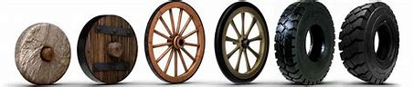

Como surgiu e quem criou?
O pneu, como o conhecemos hoje, não foi inventado por uma única pessoa, mas sim resultado de uma evolução ao longo do tempo. A invenção do pneu de borracha sólida por Robert William Thomson em 1845 e a introdução do pneu de bicicleta de borracha pneumática por John Boyd Dunlop em 1888 foram passos cruciais nessa evolução. Com o surgimento de veículos motorizados, a tecnologia de pneus foi adaptada para atender às necessidades automotivas, com contribuições significativas de várias empresas, como a Michelin, que introduziu os pneus radiais em 1946. Portanto, o pneu moderno é o resultado de inovações de diversos inventores ao longo do tempo.
Função e Composição
Os pneus têm a função principal de fornecer aderência, suporte e conforto aos veículos, permitindo uma condução segura e eficaz. Eles desempenham papéis essenciais, incluindo aderência à estrada, suporte de carga, absorção de impactos e contribuição para a direção e manuseio. Os pneus são compostos por várias camadas, incluindo a banda de rodagem, a carcassa, as cintas e outras partes, cada uma desempenhando um papel específico na estrutura e no desempenho do pneu. Existem diferentes tipos de pneus, adaptados a diversas condições e usos, como pneus de verão, de inverno, all-season e de alto desempenho. Sua composição e design variam de acordo com o uso pretendido e as condições de estrada.
Evolução

Aqui podemos ver uma breve evoluçãodo pneu. Ao analisarmos vemos que o pneu começou da roda até o pneu que conheçemos hoje